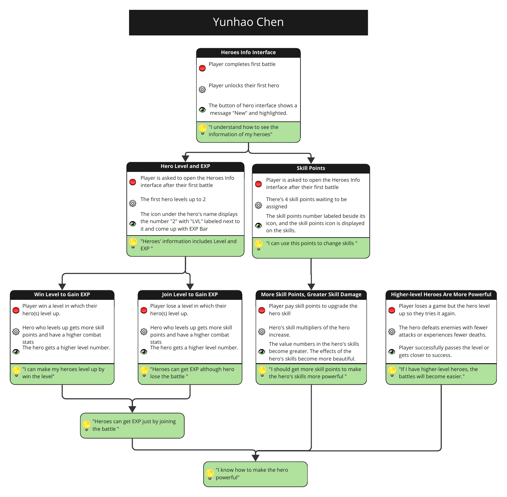

王国保卫战5 进程重设计 · 设计文档
课程作业：用技能原子（Skill Atoms）拆解《王国保卫战5》原作中，玩家是怎样一步步学会英雄养成的。每个技能原子包含四步：玩家行动、系统运算、反馈，以及玩家由此获得的理解；前面的理解是后面的前提，最后汇成「我知道怎么让英雄变强」。

| 技能原子 | 玩家行动 | 系统运算 | 反馈 | 玩家获得的理解 |
|---|---|---|---|---|
| 英雄信息界面 | 玩家完成第一场战斗 | 玩家解锁第一位英雄 | 英雄界面的按钮显示「New」并高亮 | 「我知道怎么查看英雄的信息」 |
| 英雄等级与经验 | 第一场战斗后，玩家被要求打开英雄信息界面 | 第一位英雄升到 2 级 | 英雄名字下方的图标显示数字「2」，旁边标有「LVL」，并出现经验条 | 「英雄的信息包括等级和经验」 |
| 技能点 | 第一场战斗后，玩家被要求打开英雄信息界面 | 有 4 个技能点等待分配 | 技能点图标旁标出技能点数量，技能上显示技能点图标 | 「我可以用这些点数改变技能」 |
| 赢得关卡获得经验 | 玩家赢下一关，英雄在这一关中升级 | 升级的英雄获得更多技能点，战斗属性更高 | 英雄的等级数字变大 | 「我可以通过赢得关卡让英雄升级」 |
| 参与关卡获得经验 | 玩家输掉一关，英雄在这一关中升级 | 升级的英雄获得更多技能点，战斗属性更高 | 英雄的等级数字变大 | 「英雄即使输了战斗也能获得经验」 |
| 更多技能点，更高技能伤害 | 玩家花费技能点升级英雄技能 | 英雄的技能倍率提高 | 英雄技能中的数值变大，技能特效更华丽 | 「我应该获得更多技能点，让英雄的技能更强」 |
| 等级更高的英雄更强 | 玩家输了一局，但英雄升级了，于是再试一次 | 英雄用更少的攻击击败敌人，或死亡次数更少 | 玩家成功通关，或更接近成功 | 「如果英雄等级更高，战斗会变得更容易」 |